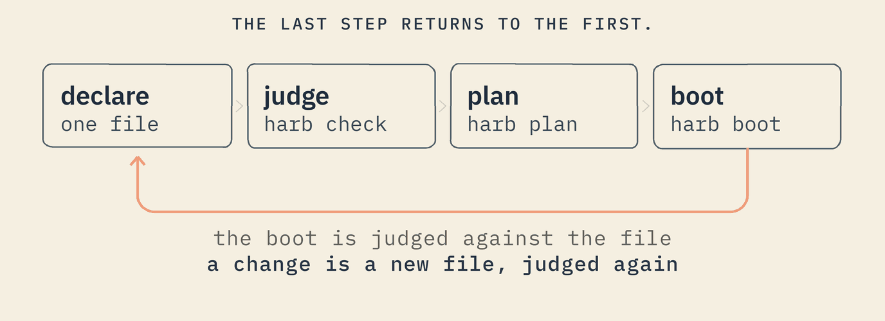
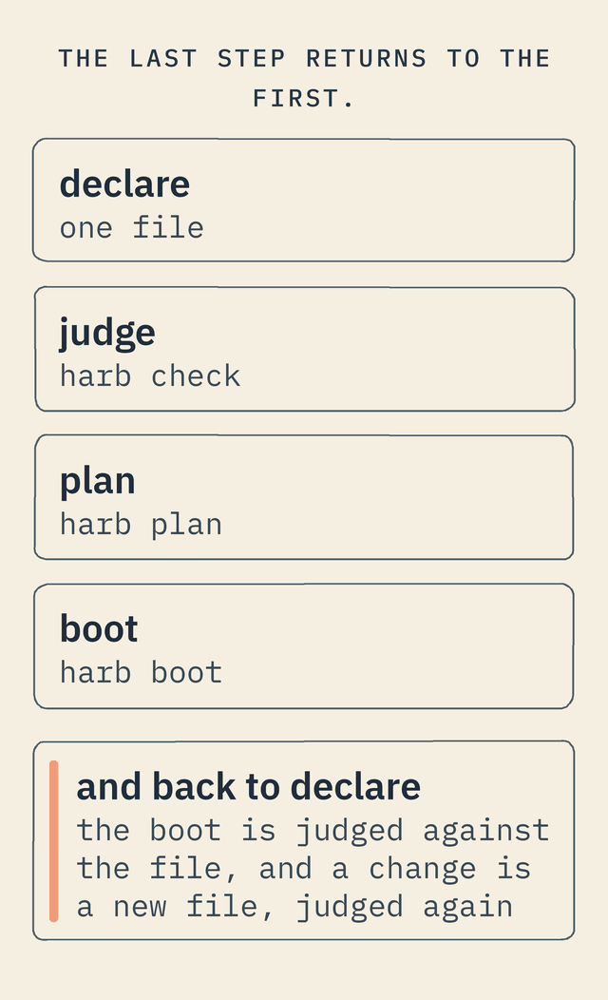

A sovereign operating system
The machine,
declared.
Built on proven Linux, for AI agents you must be able to govern, and for critical work that must keep running — and stay its owner's — when everything else stops.
DEFINE MACHINE hello AS ( PROFILE hosted, ARCH x86_64, KERNEL linux ) RATIONALE "the smallest machine that boots" DEFINE SERVICE greet AS ( RUN ["/app/greet"] ) RATIONALE "say hello, then exit"
A whole machine, in nine lines. Each part must say why it is there.
$ harb check hello.machine machine hello -- hosted / x86_64 / kernel linux -- ... -- judged, no refusal $ bash experiment/os2_image.sh qemu_egress boot: harb init -- machine qemu_egress (hosted / x86_64 / qemu_pc) -- pid 1 ... boot: egress lan -- 10.9.0.0/16 and nowhere else: no default route ... reach 8.8.8.8 -- no route: this machine knows no way there boot: judge -- the boot matches its expectation (/etc/expected, 14 lines)
check reads the file and rules on it. The script builds a reference machine into an image and boots it in QEMU, a program that imitates a whole computer. Its first line is harb itself, started by the kernel as the machine's first program (PID 1); its last compares the boot with the file — here, that it knows no way to the open internet. No hardware needed.
What just happened


You wrote it
A few lines of plain text: what the machine is, and the one program it runs.
It was judged
That is, checked: before anything ran, harb check read the file against the language's rules — every line one it knows, every program granted what it asks for, every part saying why it is there. Break a rule and it refuses, naming the line and the reason.
It booted
A machine built from a file like this one, in an emulator on your own laptop, printing a line for every step it took. No board to buy.
It judged itself
At the end, the machine compared what it had printed, line by line, with what its file says a correct boot prints. A difference is listed, and an update that differs is not kept. That is the whole method.
New to a word here — PID 1, the kernel, a world, a pin? Every word this project uses, in plain terms →
Built for governed AI agents
An agent has what its file grants — and the kernel, not a policy, holds it there.
An AI agent that can act needs limits it cannot talk its way out of. Instructions can be argued with, and a policy enforced by software above the operating system is only as strong as that software. On a declared machine the agent is one program the file names, and the kernel — the core of the operating system, which decides what every program may do — gives it exactly what the file grants and nothing else.
No network unless declared
A program that did not ask for the network runs with none at all: the kernel gives it an empty one, with nothing to send data through.
No disk unless declared
A program that did not ask for the disks sees none of them, and one that did can be limited to the ones it names.
A ceiling it cannot pass
Memory and processor time are capped per program by the kernel. Past its memory, the agent is stopped; nothing else on the box notices.
No way around the box
No program may attach disks, set the clock, load code into the kernel, look inside another program or restart the box — and there is no shell to open and nothing to install.
Every limit here is built, and proven by a reference machine whose boot shows the kernel holding a program to it. Not built yet: a firewall, a signed record of each action an agent takes, and the tools for an agent to propose a change. The agent floor, in full → Security, threat by threat →
Who it is for
The people who answer for the whole solution — whether or not they build the hardware.
If you are answerable for how a solution behaves in the world — not only for the code, but for whether it is still serving on a Tuesday morning in a building you are not in — then the operating system has always been the one layer you were handed rather than one you designed. You inherited its assumptions, its update policy, its ecosystem, and then spent your time working around them.
Harobanda gives that layer back. The operating system becomes part of your solution's model, shaped by the constraints of your domain, not by a general-purpose system built for everyone and no one. A machine you declare is a machine you designed: it does your job, keeps your guarantees, and carries nothing you did not put there. If you also choose the device it runs on, the fit is tighter still — but nothing here asks you to.
Whoever answers for the whole solution, the machine is the missing floor — the last layer that was never yours to shape.
What is real today
It is a working system, and a young one. Declared machines boot and judge themselves in an emulator today; no customer yet runs a critical production workload on one. The kernel underneath is borrowed on purpose — the same long-term-support Linux the major distributions ship, fingerprinted so that any change to its source would show, and built by your own compiler. And it will never be a product you buy from a vendor, because a vendor inside the system is the one thing it refuses.
Explore the site
Seven ways in.
The full stack & AI
The computational foundation, the floor that holds an agent to what its file grants, and a governed assistant that keeps your data on the box.
Three pages → WhyWhere this came from
The context that produced it, what it is not against the tools you already run, the gap in all three kinds of OS, the three differences that follow — and where it stands today.
Six pages → The machineHow it works
Not a new kernel, every word it uses in plain terms, the four promises kept before any hardware is bought, and what running one is like.
Four pages → BuildBuild on it
Your apps as declared services, the local-first model, and one binary to a PC, a Pi, a tablet or a sensor.
Three pages → SecurityWhat the kernel refuses
What a program can reach, in the machine's own words; the 25 calls no file can ask for; the ten agent threats — and what is not built yet.
Four pages → EnterpriseEnterprise IT
Security, scalability and integration answered from one design — and why it is cloud-friendly rather than a cloud replacement.
For IT → The sourceRun one yourself
Nine lines of text, and the court rules on them. One script, and a machine boots in an emulator on the laptop you are reading this on — no hardware, no account. The tour is eighteen lessons, and every one of them ends by showing you how to break it.
Read the source, build it, boot it →